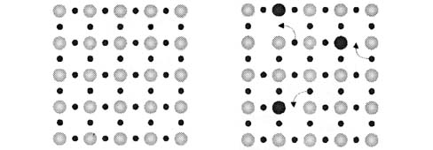
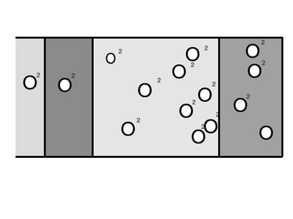
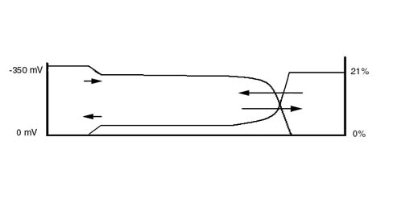
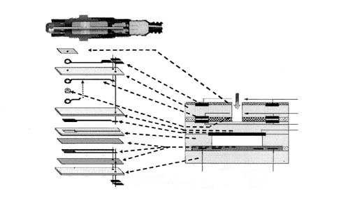
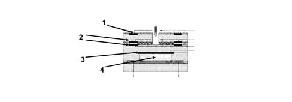
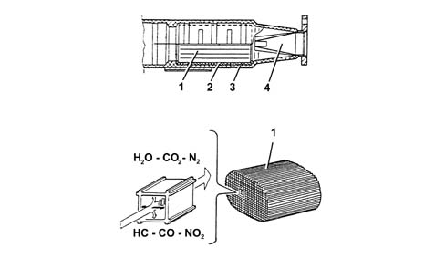
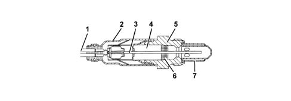
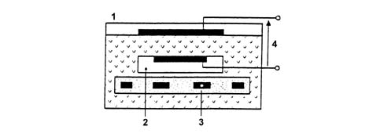
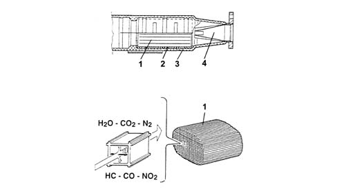
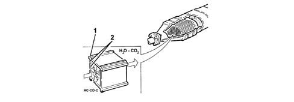

1080B EXHAUST EMISSION CONTROL SYSTEM
- Path
- Descriptions > 10 ENGINE UNIT > 1080 EXHAUST EMISSION CONTROL SYSTEM > 1080B EXHAUST EMISSION CONTROL SYSTEM
- Kind
- system description
- Applies to
- all engines; all production periods
- Interactive page
- https://sloeber94.github.io/elrnDB-aGt/en/#/125000300
Applies to: engines: 2.0 JTS; all production periods
CONSTRUCTION SPECIFICATIONS
Lambda sensors





Catalytic converter
The three-way catalytic converter makes it possible to keep down the levels of the three pollutant gases in the exhaust gases at the same time:
- unburnt hydrocarbons (HC);
- carbon monoxide (CO);
- nitrogen oxides (NOx).
Two types of chemical reaction take place inside the converter:
- oxidation of CO and HC to carbon dioxide (CO2) and water (H2O)
- reduction of NQx to nitrogen (N2).
The converter consists of a structure, a metal gauze suppoart to dampen impacts and vibrations and a stainless steel outer casing that is resistant to high temperatures and atmospheric agents.
The honeycomb structure is made from a ceramic material covered in an extermely thin layer of catalytically active substances, platinum or rhodium, which accelerated the chemical decomposition of the harmful substances contained in the exhaust gases which, when passing through the core cells at temperatures above 300° - 350°C, activate the catalyzers setting off the oxidation/reduction reactions.
A perforated steel cone improves the diffusion of the exhausts gases in the ceramic core cells to ensure the optimum efficiency and lifespan of the catalyzer.

1 - One-piece ceramic structure
2 - Metal mount
3 - Outer casing
4 - Perforated steel cone
Applies to: engines: 1.8 T.SPARK; all production periods
OPERATION
Lambda sensors
These are planar type and located upstream and downstream of the catalytic converter.
The upstream sensor determines mixture control, known as the first loop.
The control unit controls and manages injection so that the air/fuel ratio is always sufficiently close to a stoichiometric level to maximise catalytic converter efficiency. The mixture is enriched to ensure maximum performance under conditions of full power and high use.
The downstream sensor diagnoses the conversion efficiency of the converter/s.
Then:
- Lambda = 1 ideal mixture
- Lambda > 1 lean mixture
- Lambda < 1 rich mixture
a - Rich mixture (lack of air)
b - Lean mixture (excess air)
The Lambda sensors are in contact with exhaust gases and generate an electrical signal with voltage dependent on oxygen level in the gas. This voltages alters abruptly when mixture composition deviates from Lambda = 1.
The injection control unit manages Lambda sensor heating in proportion with exhaust gas temperature.
This avoids thermal shocks to the ceramic case due to contact with condensed water present in exhaust gas when the engine is cold.
The measurement chamber and heater are built into a planar (laminated) ceramic element that offers the benefit of fast chamber heating. This allows closed loop (lambda = 1) control within 10 second of engine start-up.

1 - Connection cable
2 - Protective sleeve
3 - Planar sensor element
4 - Ceramic mounting pipe
5 - Sensor housing
6 - Ceramic seal
7 - Protective pipe
The Lambda sensor works on the principle of an oxygen concentration chamber with solid electrolyte.
The measurement chamber surfaces are coated with microporous layers of noble material.

1 - Exhaust gas
2 - Reference air passage
3 - Heater
4 - Lambda sensor voltage
Specifications:
- Fuel system: 12V
- Internal resistance: 0.5 - 1 kOhm
Catalytic converter
The three-way catalytic converter makes it possible to keep down the levels of the three pollutant gases in the exhaust gases at the same time:
- unburnt hydrocarbons (HC);
- carbon monoxide (CO);
- nitrogen oxides (NOx).
Two types of chemical reaction take place inside the converter:
- oxidation of CO and HC to carbon dioxide (CO2) and water (H2O)
- reduction of Nox to nitrogen (N2).
The converter consists of a structure, a metal gauze suppoart to dampen impacts and vibrations and a stainless steel outer casing that is resistant to high temperatures and atmospheric agents. The honeycomb structure is made from a ceramic material covered in an extermely thin layer of catalytically active substances, platinum or rhodium, which accelerated the chemical decomposition of the harmful substances contained in the exhaust gases which, when passing through the core cells at temperatures above 300° - 350°C, activate the catalyzers setting off the oxidation/reduction reactions.

1 - One-piece ceramic structure
2 - Metal mount
3 - Outer casing
4 - Perforated steel cone
Applies to: engines: 3.2 V6; all production periods
CONSTRUCTION SPECIFICATIONS
Lambda sensors
These planar sensors are fitted: on the two catalytic preconverters and the two catalytic converters. They inform the injection control unit about combustion progress (stoichiometric ratio).
The upstream sensors monitor concentration and are known as the 1st loop (closed loop of upstream sensor).
The sensors downstream of the catalytic converter are used to for converter diagnostics and to fine-tune 1st loop control parameters.
The second loop is therefore adaptive to make up for production discrepancies and slight drift that upstream sensor responses could experience due to ageing and contamination.
This control is known as 2nd loop control (downstream sensor closed loop).
The electronic control unit identifies mixture composition (lean or rich) from the lambda sensor output voltage.
This adjusts injected fuel quantity to ensure optimum mixture composition (? = 1 to create ideal conditions for treatment of exhaust gas in the catalytic converter.
if the mixture is too rich (? < 1) the quantity of fuel should be reduced and if the mixture is too lean (? > 1) the quantity of fuel should be increased.
a - Rich mixture (lack of air)
b - Lean mixture (excess air)
The Lambda sensors are in contact with exhaust gases and generate an electrical signal with voltage dependent on oxygen level in the gas.
This voltage changes abruptly when mixture concentration deviates from a value of ? = 1.
The injection control unit manages lambda sensor heating in proportion with exhaust gas temperature.
This avoids thermal shocks to the ceramic case due to contact with condensed water present in exhaust gas when the engine is cold.
The measurement chamber and heater are built into a planar (laminated) ceramic element that offers the benefit of fast chamber heating. This allows closed loop (? = 1) control within 10 seconds of engine start-up.

1 - Connection cable
2 - Protective sleeve
3 - Planar sensor element
4 - Ceramic mounting pipe
5 - Sensor housing
6 - Ceramic seal
7 - Protective pipe
The Lambda sensor works on the principle of an oxygen concentration chamber with solid electrolyte.
The measurement chamber surfaces are coated with microporous layers of noble material.

1 - Exhaust gas
2 - Reference air passage
3 - Heater
4 - Lambda sensor voltage
Catalytic converter
The three-way catalytic converter makes it possible to keep down the levels of the three pollutant gases in the exhaust gases at the same time:
- unburnt hydrocarbons (HC);
- carbon monoxide (CO);
- nitrogen oxides (NOx).
Two types of chemical reaction take place inside the converter:
- oxidation of CO and HC to carbon dioxide (CO2) and water (H2O)
- reduction of NQx to nitrogen (N2).
The converter consists of a structure, a metal gauze suppoart to dampen impacts and vibrations and a stainless steel outer casing that is resistant to high temperatures and atmospheric agents.
The honeycomb structure is made from a ceramic material covered in an extermely thin layer of catalytically active substances, platinum or rhodium, which accelerated the chemical decomposition of the harmful substances contained in the exhaust gases which, when passing through the core cells at temperatures above 300° - 350°C, activate the catalyzers setting off the oxidation/reduction reactions.
A perforated steel cone improves the diffusion of the exhausts gases in the ceramic core cells to ensure the optimum efficiency and lifespan of the catalyzer.

1 - One-piece ceramic structure
2 - Metal mount
3 - Outer casing
4 - Perforated steel cone
Applies to: engines: 1.9 JTD 16V; all production periods
DESCRIPTION OF COMPONENTS
CATALYTIC CONVERTER
Specifications
The catalytic converter is a post-treatment device for oxidizing the CO, HC and particles transforming them into carbon dioxide (CO2
) and water vapour (H2
O).
The catalytic converter consists of a ceramic, honeycomb structure (1) with cells impregnated with platinum (2) which catalyzes the oxidation reactions.

Operation
The exhaust gases passing through the cells heat the catalyzer triggering off the conversion of the pollutants into inert compounds.
The oxidizing chemical reaction of the CO, HC and particles is effective at temperatures of between 200 and 350°C.
In effect, above 350°C the sulphur contained in the diesel fuel starts to oxidize producing sulphur dioxide and sulphur trioxide.